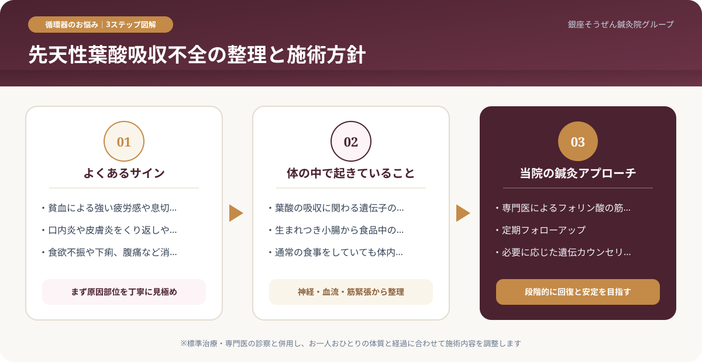

先天性葉酸吸収不全の鍼灸
生まれつき腸管で葉酸を吸収できず貧血や神経症状を起こす希少疾患です。医療機関での葉酸補充療法を最優先に安定期を支援します。
まず知っておきたい要点と改善の流れ

葉酸の吸収に関わる遺伝子の変異により、生まれつき小腸から食品中の葉酸を適切に吸収できず、通常の食事をしていても体内の葉酸が欠乏してしまう極めて稀な遺伝性疾患です。葉酸は赤血球やリンパ球の産生、腸管粘膜の維持、中枢神経系の発達に不可欠なため、不足すると巨赤芽球性貧血、免疫低下、下痢、発育遅滞、神経障害など多様な症状が生じます。
このようなお悩みはありませんか？
- ✓貧血による強い疲労感や息切れ、動悸がある
- ✓口内炎や皮膚炎をくり返しやすい
- ✓食欲不振や下痢、腹痛など消化器の不調が続く
- ✓手足のしびれや歩行のしにくさ、発達の遅れがある
当院の施術アプローチ・改善の流れ
なぜ鍼灸で改善へ向かうのか？（作用機序の図解）
先天性葉酸吸収不全に対する鍼灸は、心拍変動・血管トーンを整える自律神経サポート機序を通じて、お体本来の回復力を引き出します。

循環器専門医の標準治療を絶対前提とし、手首や背部の安全な経穴へ低刺激でアプローチします。
心臓への過剰な交感神経刺激を穏やかに鎮め、心拍リズムと血管緊張の急変を抑えます。
ストレスで固まりやすい胸郭や横隔膜の緊張を解き、酸素摂取とリラックス反応を促します。
内服管理を厳守しながら、疲労やストレスが引き金となる症状不安の軽減を支えます。
院長YouTube解説・関連動画
先天性葉酸吸収不全の原因は、遺伝子の変異
先天性葉酸吸収不全の原因は、遺伝子の変異です。遺伝によって発症し、遺伝形式は常染色体劣性遺伝です。
葉酸が体の中に吸収されるために働いている腸管に存在する葉酸輸送体の設計図であるSLC46A1遺伝子に変異が起こることで、葉酸を体の中に吸収する機能を失い、葉酸の吸収ができなくなるのです。
葉酸輸送体は血の中に存在する葉酸を脳などの中枢神経系に運ぶ働きもしています。そのため、SLC46A1遺伝子の変異は、中枢神経系での葉酸不足にもつながります。
中枢神経系で葉酸が足りなくなると、脳の発達や機能を維持することに関して障害が起こります。
先天性葉酸吸収不全は、カリブ海のプエルトリコ自治連邦区に発症する頻度が高い地域があります。しかし、非常に珍しい病気です。
先天性葉酸吸収不全は、葉酸が適切に吸収されない遺伝的な病気の一つです。葉酸は体内の細胞分裂やDNA合成に必要な栄養素であり、特に胎児の発育や神経系の発達に重要な役割を果たしています。先天性葉酸吸収不全は、この重要なビタミンが十分に摂取されないことで健康上の問題を引き起こす原因となります。以下では、先天性葉酸吸収不全の原因について詳しく解説していきます。
遺伝的要因
先天性葉酸吸収不全は、遺伝子の変異によって引き起こされる遺伝的疾患です。具体的には、葉酸の吸収に関わる遺伝子の異常が原因となります。この遺伝子の異常により、葉酸が小腸から効率的に吸収されず、体内に必要な量が供給されなくなります。
小腸の障害
先天性葉酸吸収不全は、小腸の機能にも影響を及ぼすことがあります。小腸は栄養素の吸収を担う重要な器官であり、先天性葉酸吸収不全の場合、葉酸の吸収に必要な受容体や酵素の異常によって小腸の機能が低下します。
ビタミンB12欠乏
先天性葉酸吸収不全では、葉酸が不足するだけでなく、ビタミンB12（コバラミン）の吸収も影響を受ける場合があります。ビタミンB12は葉酸と密接に関連しており、葉酸の代謝に必要な役割を果たしています。そのため、ビタミンB12欠乏が先天性葉酸吸収不全の症状を悪化させることがあります。
葉酸含有食品の摂取不足
先天性葉酸吸収不全では、葉酸を適切に吸収できないため、葉酸含有食品からの摂取が重要です。しかし、葉酸含有食品を積極的に摂取しない場合、葉酸不足が悪化することがあります。
妊娠中の影響
妊娠中の女性において、葉酸は特に重要な栄養素となります。先天性葉酸吸収不全の母親は、胎児に十分な葉酸を供給できないため、胎児の発育に問題が生じる可能性があります。
腸の手術や病気
腸の手術や病気によって小腸の一部が切除される場合、葉酸の吸収が妨げられることがあります。これによって先天性葉酸吸収不全が引き起こされることがあります。
以上が、先天性葉酸吸収不全の主な原因に関連する要素です。先天性葉酸吸収不全は遺伝的な要因が中心ですが、他の要因と組み合わさることで症状が現れることもあります。
先天性葉酸吸収不全の症状は、貧血や下痢、発達の遅れなど
先天性葉酸吸収不全の症状は、貧血や下痢、発達の遅れや成長障害、てんかんなどです。感染症を繰り返すこともあります。
先天性葉酸吸収不全は、発症が早いと言われています。乳児期早期には症状が現れることが多いです。
葉酸は、造血系と消化器系、中枢神経系の機能を保つために大きな役割を果たしています。そのため、葉酸が足りなくなると貧血や下痢、発達の遅れなどの症状が現れるのです。
先天性葉酸吸収不全は、体内で葉酸が不足し、健康上の問題を引き起こす可能性があります。以下では、先天性葉酸吸収不全の症状について詳しく解説していきます。
貧血（貧血症）
先天性葉酸吸収不全の重要な症状の一つに、貧血が挙げられます。葉酸は赤血球の生成に重要な役割を果たしており、葉酸吸収が不十分なため、赤血球の形成が妨げられます。その結果、体内の赤血球の数が減少し、貧血が生じることがあります。貧血による症状としては、疲労感、息切れ、動悸、頭痛などが挙げられます。
神経障害
葉酸は神経系の正常な発達と機能に重要な役割を果たします。先天性葉酸吸収不全では葉酸の不足により、神経系に影響が及ぶ可能性があります。神経障害による症状としては、手足のしびれや麻痺、感覚障害、歩行困難、認知機能の低下などがあります。
成長遅延
先天性葉酸吸収不全が胎児期に発症する場合、胎児の発育に影響を及ぼす可能性があります。葉酸は細胞分裂や成長に必要な栄養素であり、葉酸の不足により胎児の成長が遅れることがあります。生まれた後も成長が遅れることがあります。
口内炎や皮膚炎
葉酸は細胞の分裂や成長に関わるため、皮膚や口腔の粘膜の健康にも重要な影響を与えます。葉酸吸収が不十分な場合、口内炎や皮膚炎（皮膚の炎症）が生じることがあります。
消化器系の問題
先天性葉酸吸収不全は小腸の機能にも影響を及ぼすことがあります。葉酸の吸収に関わる遺伝子の異常により、小腸の消化・吸収機能が低下する可能性があります。このため、消化器系の問題として、食欲不振、吐き気、下痢、腹痛などが発生することがあります。
異形赤血球の増加
葉酸の不足により、赤血球が正常な形状を保てず、異形赤血球（メガロブラスト）が増加することがあります。これにより、赤血球の機能が低下し、貧血が悪化することがあります。
先天性葉酸吸収不全の症状は個人差があり、症状の程度も人によって違います。
先天性葉酸吸収不全の改善方法は、定期的に葉酸の1種であるフォリン酸を筋肉の中に注射することです。フォリン酸を筋肉の中に注射すると血液の中や髄液の中の葉酸の濃度を上げる効果が期待できるのです。
先天性葉酸吸収不全は、非常に珍しい病気のため、症例の数が少ないです。そのため、改善方法がどのくらい有効であるかということについては確立しているとはいえません。
しかし、貧血や免疫不全状態の改善、中枢神経症状障害の予防などの効果があったという報告もあります。
先天性葉酸吸収不全は改善が可能な病気であり、適切な改善によって症状を改善し、合併症を予防することができます。以下では、先天性葉酸吸収不全の改善法について詳しく解説していきます。
葉酸補充
先天性葉酸吸収不全の改善において、最も基本的なアプローチは葉酸の補充です。葉酸サプリメントや葉酸含有の栄養剤を処方されることが一般的です。これにより、体内に不足している葉酸を補給し、葉酸の代謝異常を補完します。ただし、個々の症例に応じて適切な葉酸の投与量を調整する必要があります。
ビタミンB12補充
先天性葉酸吸収不全では、葉酸の吸収が不十分なだけでなく、ビタミンB12の吸収も影響を受ける場合があります。ビタミンB12は葉酸と密接に関連しており、葉酸の代謝に必要な役割を果たしています。したがって、葉酸とビタミンB12の両方を補充することが重要です。
葉酸吸収不全の改善には、葉酸サプリメントだけでなく、栄養バランスの取れた食事を摂取することも重要です。ビタミンB群や鉄、タンパク質など、他の栄養素も適切に補給することで、葉酸の効果を最大限に引き出すことができます。
経過観察
軽度の先天性葉酸吸収不全の場合や症状が軽い場合、経過観察が選択されることもあります。定期的に病院に行くことと葉酸補充の管理により、症状を抑えることができる場合があります。
特殊な葉酸補充法
一部では、葉酸の吸収が低下しているため、通常の葉酸補充だけでは効果が不十分な場合があります。そのような場合、特殊な葉酸補充法を検討することがあります。例えば、高用量の葉酸を投与する方法や、皮膚からの高用量の葉酸を吸収させるトランスデルマルパッチ（軟膏や貼り薬）を用いる方法などがあります。これは、消化管を経由せずに皮膚から直接葉酸を吸収することで、葉酸の吸収障害に対応するアプローチです。
根本的な改善
先天性葉酸吸収不全の改善方法は、葉酸の補充が症状を改善するものの、根本的な解決にはなりません。現在の医学では、葉酸吸収不全の遺伝的な要因を完全に修復することは難しいため、生涯にわたって葉酸補充を続ける必要があります。
家族への遺伝リスクの説明
先天性葉酸吸収不全は遺伝的な病気であるため、子どもを持つ場合、家族に遺伝リスクがあることを理解する必要があります。葉酸吸収不全では、一般的に親から遺伝的な変異を受け継いでいます。そのため、遺伝カウンセリングを受けることで、家族計画や妊娠の際に適切な対応を行うことが重要です。
症状の管理と合併症の予防
葉酸吸収不全の改善方法は、症状の管理と合併症の予防に重点を置きます。葉酸補充によって貧血や神経障害などの症状を軽減し、成長や発育に影響を与えないようにすることが目標です。また、改善を適切に行うことで合併症のリスクを低減します。
医師の指導とフォローアップ
先天性葉酸吸収不全の改善は、専門的な知識を持つ医師による指導が必要です。定期的なフォローアップ診察を受けることで、葉酸補充の適切な管理や症状の経過を把握し、プランの最適化を行います。また、改善法に変更があった場合や合併症の懸念がある場合は、適切なアドバイスと対応を受けることが重要です。
サポートグループへの参加
先天性葉酸吸収不全を発症した本人ひゃその家族は、同じ病気を持つ人々との交流や情報交換を通じて支え合うことができます。サポートグループへの参加やオンラインコミュニティに参加することで、患者や家族の不安や疑問を共有し、心のケアを行うことができます。
先天性葉酸吸収不全は、改善を行わなければ、症状が進んでいきます。しかし、フォリン酸を大量に筋肉の中に注射する方法で症状が改善したという報告があります。
そのため、改善方法がどのくらい有効であるのかについては今のところわかっていませんが、改善を行うことをおすすめします。
乳児期から20年以上フォリン酸を筋肉の中に注射し続けた人が、知的障害も無く無症状で成長しているという報告もあります。フォリン酸の注射については、今後の研究は必要ですが、今の段階では効果的な改善方法であると言えます。
先天性葉酸吸収不全の改善例
先天性葉酸吸収不全は、葉酸が適切に吸収されない遺伝的な病気であり、葉酸は体内の細胞分裂やDNA合成に必要な栄養素であり、特に胎児の発育や神経系の発達に重要な役割を果たしています。この病気は生まれつきの遺伝的要因によって引き起こされるため、先天性と呼ばれています。先天性葉酸吸収不全の改善の具体的な例を紹介します。
改善の例は個人によって異なる場合がありますが、以下では3つの実際の改善例を紹介します。
ケース1：葉酸補充と栄養法
Aさんは、乳幼児期から成長が遅れており、常に疲れやすく体力が不足していました。さらに、貧血の傾向があり、口内炎も頻繁に起こるなど、健康面で悩みがありました。Aさんは、専門医により先天性葉酸吸収不全の判断を受けました。医師はAさんに対して、葉酸サプリメントの処方と栄養法を開始しました。葉酸サプリメントは1日1回摂取するよう指示され、栄養法としてビタミンB群や鉄、タンパク質を含むバランスの取れた食事を摂るよう指導されました。また、日々の食事の内容を記録し、栄養バランスの適切な管理が行われました。開始後、Aさんの症状は徐々に改善していきました。貧血の頻度が減少し、体力や活動力が向上しました。口内炎も出現する頻度が減り、食欲も向上したことで栄養の吸収が改善されました。定期的に病院に行きながら、葉酸サプリメントの投与量や栄養法の調整が行われ、Aさんの健康状態は安定していきました。
ケース2：葉酸トランスデルマルパッチ
Bさんは、小さい頃から慢性的な貧血と手足のしびれを抱えていました。成長過程での発達が遅れており、学業や日常生活にも影響がありました。Bさんは、多くの医師に行き、先天性葉酸吸収不全の判断を受けました。Bさんの改善法として、通常の葉酸サプリメントだけでは葉酸の吸収が不十分なため、特殊な葉酸補充法が選択されました。Bさんは、葉酸トランスデルマルパッチを使用しました。このパッチは皮膚に貼ることで高用量の葉酸を皮膚から吸収するもので、消化管を経由しないため葉酸の吸収障害に対応する効果が期待できます。開始後、Bさんの体力が向上し、貧血の頻度が減少しました。さらに、手足のしびれや感覚障害が改善され、日常生活の動作にも支障がなくなりました。成長にも好影響を及ぼし、学業や社交面でも前向きな変化が見られました。
Bさんは、定期的な判断とフォローアップを受けながら、葉酸トランスデルマルパッチの適切な使用法と管理方法を学びました。医師の指導のもとで、パッチの取り替えのタイミングや貼り付ける場所を調整することで、最適な葉酸補充が行われました。改善の効果が持続的に確認されたため、Bさんはパッチを使用しながら健康な生活を送ることができました。
ケース3：遺伝カウンセリングと家族のサポート
Cさんは、先天性葉酸吸収不全の判断を受けた後、遺伝カウンセリングを受けることにしました。Cさんの家族は、他の家族メンバーに葉酸吸収不全の症状が見られることから、遺伝リスクや遺伝的な要因に対して不安を抱えていました。遺伝カウンセリングでは、医師や遺伝専門家との対話を通じて、Cさんの家族に対して先天性葉酸吸収不全に関する遺伝リスクや遺伝的な背景について説明が行われました。さらに、将来の家族計画や妊娠の際の注意点などについてもアドバイスが提供されました。Cさんの家族は、遺伝カウンセリングを受けることで、先天性葉酸吸収不全の遺伝リスクを理解し、家族計画に関して適切な判断ができるようになりました。また、家族のサポートグループに参加することで、他の家族と情報交換や心のケアを行いながら、Cさんを支えることができました。
以上の改善例は、先天性葉酸吸収不全が適切な改善方法を受けることで、症状の改善や健康状態の安定化が実現されることを示しています。個々の症状や重症度に応じて、葉酸補充や栄養法、特殊な葉酸補充法などが選択されます。
CRPS・末梢神経障害の遠隔・健側アプローチツボ図解
実際の施術ではお一人おひとりの体質・症状に合わせて選穴しますが、複合性局所疼痛症候群（CRPS）・神経障害性疼痛の安全な遠隔ケアの臨床でよく用いられる代表的なツボの目安です。

📌 代表的なツボの詳細一覧表を開く（6穴） ▼
| ツボ名 | 位置の目安 | 主な狙い | セルフケアの注意点 |
|---|---|---|---|
| 外関（がいかん） | 手の甲側、手首から指3本分肘寄り | 上肢の神経過敏・放散痛の遠隔調整 | アロディニア（接触痛）がある患側は避け健側を使います。 |
| 内関（ないかん） | 手のひら側、手首から指3本分肘寄り | 交感神経依存性の痛み・不安感の鎮静 | 強く押し込まず軽く添える程度にします。 |
| 合谷（ごうこく） | 手の甲、親指と人差し指の間 | 中枢性の下行性疼痛抑制系の活性化 | 健側への穏やかな刺激で全体の痛みを和らげます。 |
| 陽陵泉（ようりょうせん） | 膝の外側下、丸い骨の斜め下のくぼみ | 下肢の神経周囲の筋緊張・しびれ感の緩和 | 電撃痛が出ない優しい圧に留めます。 |
| 三陰交（さんいんこう） | 内くるぶしの上から指4本分上 | 末梢の微小循環改善・夜間痛による不眠ケア | 温めと併用すると末梢血流が整いやすくなります。 |
| 太衝（たいしょう） | 足の甲、親指と人差し指の骨の間 | 自律神経の過緊張・足先のピリピリ感調整 | 皮膚感覚が過敏な場合は触れずに遠隔穴を選びます。 |
国際査読論文の科学的エビデンス
国際的な医学データベース（PubMed・Cochrane等）で報告されている複合性局所疼痛症候群（CRPS）・神経障害性疼痛の安全な遠隔ケア領域の代表的な査読済み鍼灸研究をまとめています（標準治療との併用や研究上の限界を含めて正確に掲載）。
📚 査読論文データ・PubMed出典リンクを開く（4件） ▼
| 年・研究デザイン | 対象・規模 | 主な結果 | 限界・出典 |
|---|---|---|---|
| 2019年 大規模多施設RCT | 慢性安定狭心症 398名解析（標準薬物療法併用） | 16週時点の4週間発作減少は実鍼群がシャム群比5.18回・待機群比5.63回多く有意改善（P<0.001）。 | 標準薬物療法への併用（補完）試験であり単独療法ではない。 JAMA Intern Med (PMID: 31355870) |
| 2007年 シャム対照RCT | 本態性高血圧 140名完了（ドイツ・24時間ABPM） | 治療終了時の24時間血圧はシャム比SBP -6.4mmHg・DBP -3.7mmHg有意低下（P<0.001）。 | 終了3〜6か月で治療前水準へ戻るため継続ケアが必要。 Circulation (PMID: 17548730) |
| 2015年 メタ解析 | 高血圧 23 RCTs（n=1,788） | 降圧薬＋実鍼は降圧薬＋シャム比でSBP -7.47mmHg・DBP -4.22mmHg有意低下。鍼単独は降圧薬と同等・根拠不十分。 | 盲検化・異質性に課題。降圧薬の自己中断は厳禁。 PLoS One (PMID: 26207806) |
| 2025年 メタ解析 | 心拍変動（HRV）10 RCTs（n=744） | 自律神経全体の適応指標SDNNを有意に改善、重篤な有害事象なし。 | LF・HFには不確実性が高くさらなる検証が必要。 Front Neurosci (PMID: 41230507) |
参考文献・出典
- 2019年 大規模多施設RCT（慢性安定狭心症 398名解析（標準薬物療法併用））— JAMA Intern Med (PMID: 31355870)
- 2007年 シャム対照RCT（本態性高血圧 140名完了（ドイツ・24時間ABPM））— Circulation (PMID: 17548730)
- 2015年 メタ解析（高血圧 23 RCTs（n=1,788））— PLoS One (PMID: 26207806)
- 2025年 メタ解析（心拍変動（HRV）10 RCTs（n=744））— Front Neurosci (PMID: 41230507)
よくある質問（FAQ）
Q. 食事やサプリメント、鍼灸だけで先天性葉酸吸収不全を改善できますか？▼
Q. 治療が安定している時期に、だるさや冷えのケアで通院できますか？▼
あわせて読まれる関連疾患（循環器のお悩み）
急激な減圧で血液や組織に窒素などの気泡が生じる疾患です。急性期は鍼灸禁忌で高気圧酸素治療が最優先、治癒後の回復を支えます。
大動脈と肺動脈が分離せず1本の動脈幹のまま生まれる先天性心疾患です。専門医の手術・経過観察を最優先に安定期を支えます。
好酸球の異常増加により全身の細い血管に炎症が生じる指定難病です。専門医の長期治療を最優先とし、寛解・安定期のしびれや緊張を穏やかにケアします。
腎臓や肺・神経などの小型血管に炎症が起こる指定難病です。ステロイド・免疫抑制治療を最優先とし、寛解・安定期の体調管理を補完的に支えます。
首の骨の中を通る椎骨動脈の内膜が裂ける重篤な血管疾患です。突然の頭痛は即救急受診が必須で、首への施術や操作は絶対禁忌です。
夜間や安静時に心室細動を起こし得る遺伝性不整脈疾患です。循環器専門医での厳重な管理を最優先に、安定期のストレス管理を支援します。
CLINICAL RECOVERY CASES
✨ 実際の臨床改善事例・回復経過を見る
銀座本院をはじめ各院での実際の改善事例を症状別に絞り込んでご確認いただけます。
おひとりで悩まず、まずはご相談ください
銀座本院・川口・大宮・横浜・博多・田無の各院でご予約を承っております。